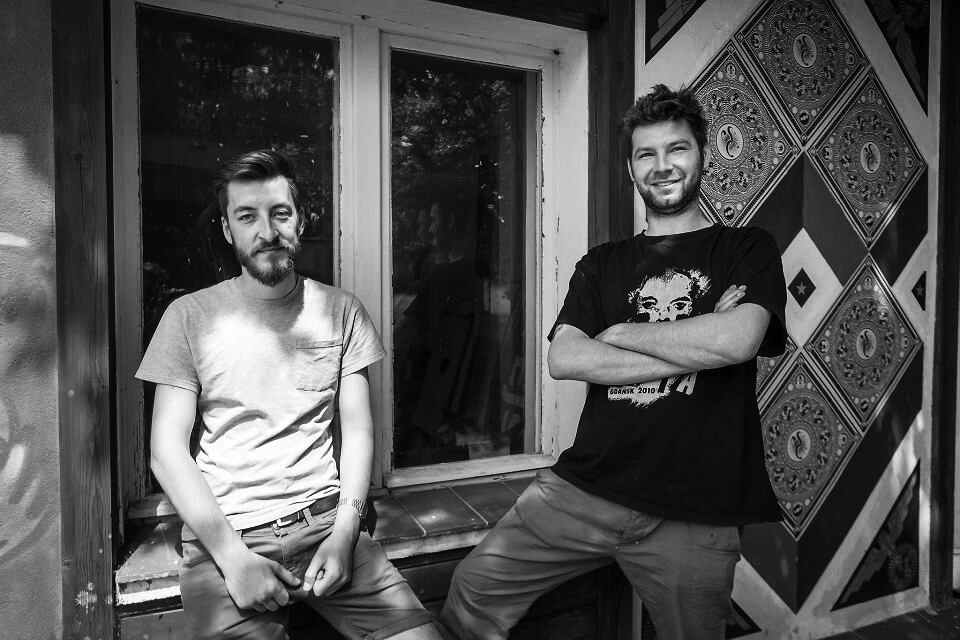

Speakers
Lars Harmsen, Slanted / DE
If not traveling, Lars Harmsen lives and works in Munich where he is partner and creative director at MELVILLE Brand Design. He launched the fontlabel Volcano-Type and is the founder of SLANTED PUBLISHERS blog and magazine. He also is professor of typography and design at the University of Applied Sciences and Arts Dortmund. Sometimes he prints posters in silkscreen workshops around the world. He loves to ride one of his 6 bicycles or to dive into the ocean.
Lars comes to Eastern to talk about diversity, differences, connections and humour he finds in various design and business ecosystems all around the World.
Liv Siddall / UK
Liv Siddall is one half of Mare Street Market on Air and is also Features Editor of smart women’s magazine Riposte. Alongside this she is a writer, editor and interviewer predominantly focused on the world of music, arts and culture and the independent magazine scene. Formerly the Features Editor at It’s Nice That and the Founder and Editor of Rough Trade Magazine, her love for radio has punctuated her career so far seeing her host the weekly It’s Nice That podcast and oversee the launch of Rough Trade Radio.
Liv comes to Eastern to talk about how to make a monthly music magazine of legendary record store with as low a budget as possible.
David Gauquelin / FR-HU
Co-founder and Design Lead at Booom., former Design Director at Prezi, ex frog designer, David has 10+ years design experience working with teams from early-stage startups to leading multinationals.
"David comes to Eastern because he believes that there's more left to design than just UI, UX, and apps. He hopes to meet dreamers, tinkerers, and digital misfits willing to explore sideways paths towards a more humane use of technology.“
Petra Dočekalová / CZ
Petra Dočekalová studied at the Type Design and Typography studio at Academy of Arts, Architecture and Design in Prague. Since 2013 she is a member of Suitcase & Briefcase Type Foundry team, working on all activities associated with foundries. She is focused on editorial work such as book Scripts for shop windows and Typo 9010, that won several awards all over the world. She is also a type designer, sign painter and lettering artist, working on new digital scripts.
She received TDC Award of excellence for her diploma project dealing with the Czechoslovak calligraphy and new hand lettering forms.
Petra comes to Eastern to talk about resurrecting the craft of sign painting that has disappeared over the years with the advance of printing technologies in the Czech Republic.
Studio Feixen / CH
Felix Pfäffli and Raphael Leutenegger are Studio Feixen, an independent design studio based in Lucerne, Switzerland that creates visual concepts.
Studio Feixen comes to Eastern to talk about ability to create work with global impact from a small town on outskirts of Switzerland.
Martin Bajaník + Potraviny YEME / SK

Founder of design studio PEKNE & DOBRE based in Bratislava, Slovakia. He co-founded successful concept café Shtoor, works with exceptional grocery store Yeme and is also the president of Association of Slovak Graphic Designers.
Peter Varmuža is a former COO of Tesco in Slovakia and a co-founder of the first conceptual grocery store in Slovakia Potraviny Yeme.
Martin and Peter come to Eastern to talk about one of the most successful, long-term and easthetically pleasing cooperations in Slovak business environment.
Studio Najbrt + MUNI / CZ
Studio Najbrt is a legendary Czech graphic design studio. The studio’s longtime collaborations with the Karlovy Vary International Film Festival, the Ambiente group, the City of Prague and many others have established its bold and playful approach, decorating its imaginary mantelpiece with awards and features in publications from all over the world.
Founder Aleš Najbrt and a representative of Masaryk University – MUNI come to Eastern to talk about their controversial yet succesful collaboration on redesigning the university's visual identity.
Oliver Klimpel / DE
Oliver works in a hybrid practice at the intersection of design, art and research. After many years in London, he’s now based in Berlin currently designing the new foyer interior of Austrian museum Kunsthaus Graz - including exhibition displays and shop facilities. His work for the exhibition “Creative Infidelities” at arc en réve – centre d’architecture Bordeaux, France, is now on show at the Museum of Contemporary Art in Leipzig. He was Professor at the Leipzig Academy of Visual Arts from 2008 til 2015; other educational projects have been an important part of his practice, having been himself trained as a graphic designer at the Leipzig Academy of Visual Arts and the Royal College of Art London. In 2016 he was the moderator of the International Biennial of Graphic Design Brno.
Oliver comes to Eastern to guide you through the conference as a host and moderator.
Peter Hajdin + The President of Slovak republic / SK
Co-founder of one of the best advertising agencies Komplot Advertising. Peter stands behind the most succesful design shop in Slovakia–Kompot, campaign for the president of Slovak republic Andrej Kiska or socially initiated anti-fascist newspaper Naše Slovensko.
Peter and a representative of the office of President of Slovak Republic come to Eastern to talk about creating a successful political campaign in post-communistic environment.
We are continuously seeking interesting themes and speakers. If you know anyone who would fit our global theme, please let us know.
We'll announce more speakers soon.
Lars Harmsen, Slanted / DE
If not traveling, Lars Harmsen lives and works in Munich where he is partner and creative director at MELVILLE Brand Design. He launched the fontlabel Volcano-Type and is the founder of SLANTED PUBLISHERS blog and magazine. He also is professor of typography and design at the University of Applied Sciences and Arts Dortmund. Sometimes he prints posters in silkscreen workshops around the world. He loves to ride one of his 6 bicycles or to dive into the ocean.
Lars comes to Eastern to talk about diversity, differences, connections and humour he finds in various design and business ecosystems all around the World.
Liv Siddall / UK
Liv Siddall is one half of Mare Street Market on Air and is also Features Editor of smart women’s magazine Riposte. Alongside this she is a writer, editor and interviewer predominantly focused on the world of music, arts and culture and the independent magazine scene. Formerly the Features Editor at It’s Nice That and the Founder and Editor of Rough Trade Magazine, her love for radio has punctuated her career so far seeing her host the weekly It’s Nice That podcast and oversee the launch of Rough Trade Radio.
Liv comes to Eastern to talk about how to make a monthly music magazine of legendary record store with as low a budget as possible.
David Gauquelin / FR-HU
Co-founder and Design Lead at Booom., former Design Director at Prezi, ex frog designer, David has 10+ years design experience working with teams from early-stage startups to leading multinationals.
"David comes to Eastern because he believes that there's more left to design than just UI, UX, and apps. He hopes to meet dreamers, tinkerers, and digital misfits willing to explore sideways paths towards a more humane use of technology.“
Petra Dočekalová / CZ
Petra Dočekalová studied at the Type Design and Typography studio at Academy of Arts, Architecture and Design in Prague. Since 2013 she is a member of Suitcase & Briefcase Type Foundry team, working on all activities associated with foundries. She is focused on editorial work such as book Scripts for shop windows and Typo 9010, that won several awards all over the world. She is also a type designer, sign painter and lettering artist, working on new digital scripts.
She received TDC Award of excellence for her diploma project dealing with the Czechoslovak calligraphy and new hand lettering forms.
Petra comes to Eastern to talk about resurrecting the craft of sign painting that has disappeared over the years with the advance of printing technologies in the Czech Republic.
Traffic Design
An organization from Gdynia, Poland, with a focus on an initiative in area of public space, cultural and artistic education and design.
Traffic Design comes to Eastern to talk about their recent project which bring the best polish designers to the city of Warsaw to redesign shop windows of local stores using aesthetics of their original time period.
Studio Feixen / CH
Felix Pfäffli and Raphael Leutenegger are Studio Feixen, an independent design studio based in Lucerne, Switzerland that creates visual concepts.
Studio Feixen comes to Eastern to talk about ability to create work with global impact from a small town on outskirts of Switzerland.
Martin Bajaník + Potraviny YEME / SK
Founder of design studio PEKNE & DOBRE based in Bratislava, Slovakia. He co-founded successful concept café Shtoor, works with exceptional grocery store Yeme and is also the president of Association of Slovak Graphic Designers.
Peter Varmuža is a former COO of Tesco in Slovakia and a co-founder of the first conceptual grocery store in Slovakia Potraviny Yeme.
Martin and Peter come to Eastern to talk about one of the most successful, long-term and easthetically pleasing cooperations in Slovak business environment.
Studio Najbrt + MUNI / CZ
Studio Najbrt is a legendary Czech graphic design studio. The studio’s longtime collaborations with the Karlovy Vary International Film Festival, the Ambiente group, the City of Prague and many others have established its bold and playful approach, decorating its imaginary mantelpiece with awards and features in publications from all over the world.
Founder Aleš Najbrt and a representative of Masaryk University – MUNI come to Eastern to talk about their controversial yet succesful collaboration on redesigning the university's visual identity.
Oliver Klimpel / DE
Oliver works in a hybrid practice at the intersection of design, art and research. After many years in London, he’s now based in Berlin currently designing the new foyer interior of Austrian museum Kunsthaus Graz - including exhibition displays and shop facilities. His work for the exhibition “Creative Infidelities” at arc en réve – centre d’architecture Bordeaux, France, is now on show at the Museum of Contemporary Art in Leipzig. He was Professor at the Leipzig Academy of Visual Arts from 2008 til 2015; other educational projects have been an important part of his practice, having been himself trained as a graphic designer at the Leipzig Academy of Visual Arts and the Royal College of Art London. In 2016 he was the moderator of the International Biennial of Graphic Design Brno.
Oliver comes to Eastern to guide you through the conference as a host and moderator.
Peter Hajdin + The President of Slovak republic / SK
Co-founder of one of the best advertising agencies Komplot Advertising. Peter stands behind the most succesful design shop in Slovakia–Kompot, campaign for the president of Slovak republic Andrej Kiska or socially initiated anti-fascist newspaper Naše Slovensko.
Peter and a representative of the office of President of Slovak Republic come to Eastern to talk about creating a successful political campaign in post-communistic environment.
We are continuously seeking interesting themes and speakers. If you know anyone who would fit our global theme, please let us know.
We'll announce more speakers soon.
Sylvain Julé
Simon Sinek
David Gauquelin
Rick Poynor
Ian Ó Maolchraoibhe
Francesco Franchi
Martin Pecina
Martin Bajaník
Sebastian Grąz
Robert Oleś
Bartek Bojarczuk
Peter Biľak
Figma
Jonas Downey
Framer
Fontstand
Travis Gertz
Bill Pardi
Christian Miller
Liv Siddall
Jan Bajtlik
Ola Niepsuj
Szende Brassai
Anna Kövecses
check Brad Frost
check Peter Hajdin
check Studio Feixen
check Adi Godrich
check Andy Sandoz
check Malika Favre
check Ralph Steadman
check Ashleigh Axios
check Annie Atkins
check Mimi Turner
check FormaOutro
Ali Ali
Mark van der Heijden
Poke London
Lo siento
Mucho
Ricardo Cavolo
Design Studio
Marta Cerda
Margot Bowman
The Mill
Gordon Reid
Istvan Orosz
Julia Solans
Mr Bingo
Jordy van Nieuwendijk
Camile Walala
Howard Sullivan
Usted
Akatre
Filip Blažek
Martin Jenča
Czechdesign
Parallel practice
Traffic design
Aleš Nešetril
Jacek Utko
Aleš Najbrt
František Štorm
Jiří Karásek
Michal Pastier
Anna Kulachek
Jozef Kabaň